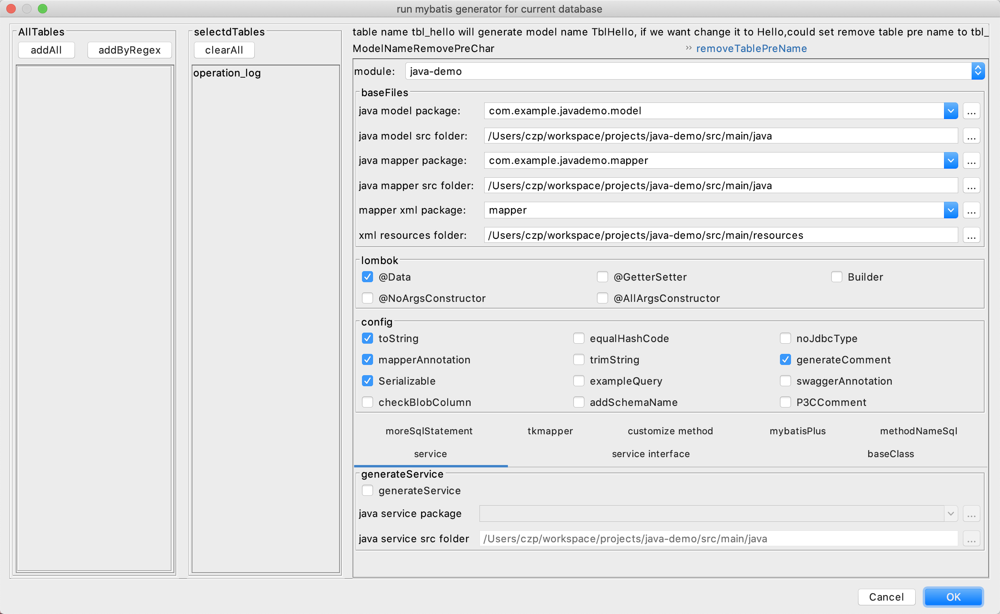

本文内容
数据库环境
- Mysql 8.0.19
- Root 密码：123456
- czp 用户密码：123456
- 表名不区分大小写
- 数据库：auth
- URL：localhost:3306
POM 引入
<dependency>
<groupId>mysql</groupId>
<artifactId>mysql-connector-java</artifactId>
</dependency>
<dependency>
<groupId>org.springframework.boot</groupId>
<artifactId>spring-boot-starter-jdbc</artifactId>
</dependency>
application.properties 配置
#通用数据源配置，新版的 mysql 都是 com.mysql.cj.jdbc.Driver 类，也可以不写
spring.datasource.driver-class-name=com.mysql.cj.jdbc.Driver
spring.datasource.url=jdbc:mysql://localhost:3306/auth?charset=utf8mb4&useSSL=false
spring.datasource.username=czp
spring.datasource.password=123456
# Hikari 数据源专用配置
spring.datasource.hikari.maximum-pool-size=2
spring.datasource.hikari.minimum-idle=1
spring.datasource.hikari.idle-timeout=600000
spring.datasource.hikari.max-lifetime=1800000
spring.datasource.hikari.connection-timeout=500
spring.datasource.hikari.login-timeout=500
spring.datasource.hikari.validation-timeout=1000
spring.datasource.hikari.initialization-fail-timeout=1000
这里只是简单的配置，在生产环境中的配置最好单独研究下 hikari
Main 方法测试
@SpringBootApplication
public class JavaDemoApplication {
public static void main(String[] args) {
ConfigurableApplicationContext context = SpringApplication.run(JavaDemoApplication.class, args);
DataSource bean = context.getBean(DataSource.class);
System.out.println(bean.getClass().getName());
}
}
输出：
com.zaxxer.hikari.HikariDataSource
spring boot 2 之后，当我们引入了
spring-boot-starter-jdbc或者spring-boot-starter-data-jpa，就会包含有 hikari 依赖，只要找到 hikari 依赖，spring boot 就会加载它作为默认的 dataSource 类型。可以修改
spring.datasource.type = com.zaxxer.hikari.HikariDataSource这个配置，改成其他的连接池比如说 Druid。
DataSource 是什么
旧版 API DriverManager
Class.forName(“com.mysql.jdbc.Driver”);
String url = “jdbc:mysql://localhost:3306/test?user=root&password=123456″;
Connection con = DriverManager.getConnection(url);
Statement statement = con.createStatement();
Class.forName(“com.mysql.jdbc.Driver”);，主要是为了加载驱动类，然后驱动类里有一段静态初始化的代码就是：将自己注册到 DriverManager 的 driver 列表里然后我们所有的操作就是：使用 DriverManager 来获取连接
DriverManager 根据 URL 等协议前缀来判断应该由哪个驱动类来获取连接
DriverManager 最大的问题有两个：
- 获取连接的时候需要传入连接参数，它自己内部不保存 url、password 等信息，这样导致硬编码
- 不支持连接池，每次获取连接都是创建新连接。这一点是因为：DriverManager 本身是一个类，并不是一个接口规范，它的行为就是不支持连接池，所以只能外挂连接池
新版 API DataSource
public interface DataSource extends CommonDataSource, Wrapper {
Connection getConnection() throws SQLException;
Connection getConnection(String username, String password)
throws SQLException;
}
DataSource 是一个接口定义，它的核心就是：获取连接
而至于连接是如何获取的，是否是新建的，是否被缓存了，这全都取决于具体的 DataSource 实现
DataSource 的好处就是抽象出了数据源最重要的功能，那就是获取连接，让实现者有很高的自由度：
- 使用者不需要显示传入连接参数，这些信息在 DataSource 初始化的时候就已经保存了
- 使用者不需要关心连接池的逻辑，这些在 DataSource 的实现者那里已经解决了
总结
DataSource 就是一个获取连接的对象，它的核心接口就是获取连接，我们初始化 DataSource 就把连接所需要的 URL 等信息保存到了 DataSource 内部了。优秀的 DataSource 实现都会实现连接池的功能，这一块儿是保证性能的一个关键点。
在 spring boot 2 之后，我们只要依赖里包含了 hikari（引入了 spring-boot-starter-jdbc 或者 spring-boot-starter-data-jpa 会自动包含），就会默认使用 hikari 实现的数据源：com.zaxxer.hikari.HikariDataSource 创建一个 DataSource 对象到容器中。
建表并且插入数据
resources/schema.sql
CREATE TABLE IF NOT EXISTS operation_log
(
id int(11) NOT NULL AUTO_INCREMENT COMMENT '主键',
block_height bigint(20) NOT NULL COMMENT '区块高度',
download_link varchar(320) NOT NULL DEFAULT '' COMMENT '下载链接',
create_time datetime NOT NULL DEFAULT CURRENT_TIMESTAMP COMMENT '记录创建时间',
update_time datetime NOT NULL DEFAULT CURRENT_TIMESTAMP ON UPDATE CURRENT_TIMESTAMP COMMENT '记录修改时间',
PRIMARY KEY (id),
INDEX create_time_key (create_time),
INDEX update_time_key (update_time)
) ENGINE = InnoDB
AUTO_INCREMENT = 701 // 表示自增从 701 开始
DEFAULT CHARSET = utf8mb4;
resources/data.sql
INSERT INTO operation_log(block_height, download_link)
VALUES (100, 'aaa'),
(100, 'aaa'),
(100, 'aaa'),
(100, 'aaa'),
(100, 'aaa'),
(100, 'aaa'),
(100, 'aaa'),
(100, 'aaa'),
(100, 'aaa'),
(100, 'aaa');
在 application.properties 中添加
# spring.datasource.schema=classpath:schema.sql
# spring.datasource.data=classpath:data.sql
spring.datasource.initialization-mode=always
前两行可以不配置，默认就是这两个文件
initialization-mode 有：
- always，启动就执行初始化的两个 sql 文件
- never，不执行
- embedded，h2这种内嵌的数据库才执行
集成 mybatis
<dependency>
<groupId>org.mybatis.spring.boot</groupId>
<artifactId>mybatis-spring-boot-starter</artifactId>
<version>2.1.1</version>
</dependency>
mybatis.type-aliases-package=com.example.javademo.model
mybatis.mapper-locations=classpath:mapper/*.xml
使用 MyBatisCodeHelper-Pro 生成代码

transactionManager PlatformTransactionManager
public interface PlatformTransactionManager extends TransactionManager {
TransactionStatus getTransaction(@Nullable TransactionDefinition definition)
throws TransactionException;
void commit(TransactionStatus status) throws TransactionException;
void rollback(TransactionStatus status) throws TransactionException;
}
事务管理器，用于管理事务什么时候提交，什么时候回滚，对于不同的框架，会有不同的事务管理器的实现
当我们使用 spring-boot-starter-data-jpa 时，springboot 会创建 JpaTransacationManager 作为事务管理器。
当我们使用 mybatis-spring-boot-starter 时，他会创建 DataSourceTransacationManager 作为事务管理器。
Transactional 注解
@Target({ElementType.TYPE, ElementType.METHOD})
@Retention(RetentionPolicy.RUNTIME)
@Inherited
@Documented
public @interface Transactional {
@AliasFor("transactionManager")
String value() default "";
@AliasFor("value")
String transactionManager() default "";
Propagation propagation() default Propagation.REQUIRED;
Isolation isolation() default Isolation.DEFAULT;
int timeout() default TransactionDefinition.TIMEOUT_DEFAULT;
boolean readOnly() default false;
Class<? extends Throwable>[] rollbackFor() default {};
String[] rollbackForClassName() default {};
Class<? extends Throwable>[] noRollbackFor() default {};
String[] noRollbackForClassName() default {};
}
- value 和 transactionManager
- 两个含义是一样的，都是指定要使用的事务管理器的 bean 名称
- propagation
- 事务的传播机制类型，下一节详细说明
- 默认是 Propagation.REQUIRED
- 进入此方法时没有事务就新建事务
- 进入此方法时已经有事务了，这个方法就也加入这个事务
- isolation
- 事务的隔离级别，参考 15.数据库的隔离级别
- 默认是 Isolation.DEFAULT
- 表示使用数据库默认的事务隔离级别，对于 mysql 是 RR，可重复读。
- 其它数据库很多是 RC，读已提交
- timeout
- 超时时间（秒数）
- readOnly
- 是否只读事务
- rollbackFor
- 方法发生哪些类型的异常时事务回滚，默认是任何类型的异常都回滚
- rollbackForClassName
- 同上，只不过这里的是传入字符串，表示异常的全类名
- noRollbackFor
- 方法在发生指定异常时不回滚，默认是所有异常都回滚
- noRollbackForClassName
- 同上，只不过这里的是传入字符串，表示异常的全类名
spring 事务传播机制
参考
https://segmentfault.com/a/1190000020386113?utm_source=tag-newest
传播机制的作用
控制事务传播的行为：
- A 方法调用 B 方法，两个 Transactional 方法是否处于一个事务
- B 方法失败了，是否都回滚，还是只回滚 B
- A 方法失败了，是否都回滚，还是只回滚 A
事务传播机制就是配置这些一系列的情况下的行为的
传播机制的类型
- REQUIRED
- 沿用当前已经存在的事务，如果当前不存在则新建一个事务
- 这是最常用的一种
- SUPPORTS
- 如果当前存在事务，则加入这个事务
- 如果当前不存在事务，则以非事务方式运行，这个和不写没区别（有点搞笑）
- MANDATORY
- 如果当前存在事务，则加入事务
- 如果当前无事务，则抛出异常，也即父级方法必须有事务
- 也就是说这种类型的，必须加入一个现存的事务中
- REQUIRES_NEW
- 新建事务，如果当前存在事务，则把当前事务挂起
- 这个方法会独立提交事务，不受调用者的事务影响，父级异常，它也是正常提交
- 也就是说这个方法运行在一个独立的事务里
- NOT_SUPPORTED
- 以非事务方式运行
- 如果当前存在事务，则把当前事务挂起
- NEVER
- 以非事务方式运行，如果当前存在事务，则抛出异常，即父级方法必须无事务
- NESTED
- 如果当前存在事务，它将会成为父级事务的一个子事务，方法结束后并没有提交，只有等父事务结束才提交
- 如果当前没有事务，则新建事务
- 如果它异常，父级可以捕获它的异常而不进行回滚，正常提交
- 但如果父级异常，它必然回滚，这就是和
REQUIRES_NEW的区别
传播机制不生效的情况
spring 使用 aop 对代理对象进行拦截从而添加事务的特性。我们在一个 service 内部的 A 方法调用 B 方法，这里 A 方法内部对 B 方法的调用，使用的是被代理的对象的 B 方法调用，此时事务管理器是察觉不到 B 方法的调用的，因此 B 方法上的事务注解就失效了
要解决这种内部调用失效的情况，知道原理就很简单：既然是因为调用内部方法时使用的是被代理对象，那么我们可以手工在 A 方法内部调用容器方法获取到代理对象service，通过 service.B() 的方式来进行代理对象的调用